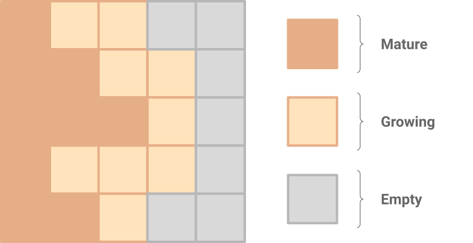
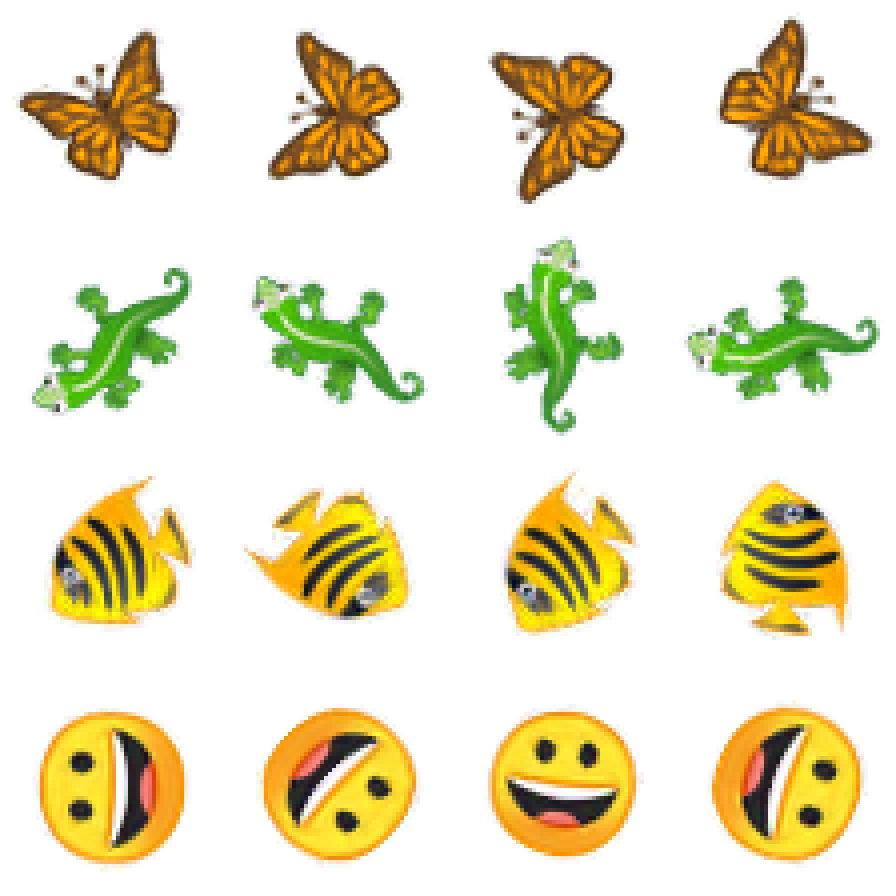

本文是 专题：可微分自组织系统 的一部分，该系列以实验性格式汇集了受邀的短文，深入探讨可微分自组织系统，并穿插来自相邻领域多位专家的批判性评论。
可微分自组织系统专题
自我分类的 MNIST 数字
大多数多细胞生物的生命始于一个受精卵细胞——这个单一细胞的后代能够可靠地自我组装成高度复杂的解剖结构，每次都以完全相同的排列方式形成多个器官和组织。构建自身身体的能力可能是每个生物都具备的最基本技能。形态发生（即生物体形状发育的过程）是自组织现象最惊人的例子之一。细胞作为身体的基本构建单元，通过与邻近细胞的交流来决定器官和身体结构的形状、在何处生长每个器官、如何将它们相互连接，以及何时最终停止生长。理解复杂结果如何从简单规则中涌现，以及与稳态[1]反馈环的相互作用，是当前活跃的研究领域[(Pezzulo et al., 2016; Pezzulo et al., 2015)]。可以明确的是，进化已经学会利用物理定律和计算原理，在由基因组编码的细胞硬件上运行高度健壮的形态发生软件。
这个过程对干扰具有极强的鲁棒性。即使生物体已经完全发育，有些物种仍具备修复损伤的能力——这一过程被称为再生。有些生物，例如蝾螈，能够完全再生重要器官、四肢、眼睛，甚至大脑的一部分！形态发生是一个令人惊讶的适应性过程。有时即使是非常非典型的发育过程，也能产生可存活的生物体——例如，当早期哺乳动物胚胎被切成两半时，每一半都能发育成完整的个体，即同卵双胞胎！
该领域最大的谜题在于：细胞集体如何知道要构建什么，以及何时停止。基因组学和干细胞生物学仅是谜题的一部分，因为它们解释了每个细胞中特定成分的分布以及不同细胞类型的建立。虽然我们知道许多与再生过程相关的基因，但我们仍然不知道足以让细胞知道如何构建或重塑复杂器官以达到特定解剖目标的算法。因此，生物医学未来工作的一个主要关键在于发现细胞集体中大规模解剖结构如何被指定的过程，以及我们如何改写这一信息以实现对生长和形态的理性控制。生命软件显然拥有众多模块或子程序，例如“在这里构建一只眼睛”，这些模块可以通过简单的信号触发来激活(Pai et al., 2012)。发现此类子程序并绘制发育逻辑图谱，是发育生物学与计算机科学交叉的新兴领域。重要的一步是尝试为这一过程建立计算模型，既丰富生物学家的概念工具箱，也帮助将生物学的发现转化为更好的机器人技术和计算技术。
想象一下，如果我们能够设计出与生物生命一样具有可塑性和鲁棒性的系统：能够自我生长和自我修复的结构与机器。这种技术将彻底改变当前的再生医学研究，在这一领域，科学家和临床医生正在寻找能够让体内细胞按需构建结构的输入或刺激。为了帮助破解形态发生编码的谜题，同时利用生物学的洞见在现实中创造自我修复系统，我们尝试在一个硅基实验中复现其中一些期望的特性。
模型
工程学科的研究人员经常使用多种融入局部交互的模拟方法，包括偏微分方程（PDE）系统、粒子系统以及各种细胞自动机（CA）。我们将重点关注细胞自动机模型，将其作为寻找细胞级规则的路线图，这些规则能引发集体表现出复杂且具有再生性的行为。CA 通常由一个网格组成，网格中的细胞通过迭代更新，每个步骤对每个细胞应用相同的规则集。细胞的新状态仅取决于其紧邻邻域内少数细胞的状态。尽管表面上看起来简单，CA 却常常展现出丰富、有趣的行为，并且长期以来一直被用于建模生物现象。
让我们尝试开发一个细胞自动机更新规则，从单个细胞开始，在 2D 网格上生成一个预定义的多细胞图案。这就是我们对生物体发育的类比玩具模型。为了设计 CA，我们必须指定可能的细胞状态及其更新函数。典型的 CA 模型使用一组离散值来表示细胞状态，尽管也存在使用连续值向量的变体。使用连续值的好处在于允许更新规则成为细胞邻域状态的可微分函数。根据局部环境指导单个细胞行为的规则，类似于由生物体基因组编码的底层硬件规范。从起始配置运行模型一定步数后，将揭示这种硬件所支持的图案形成行为。
那么——可微分更新规则到底有什么特别之处？它们让我们能够使用损失函数这一强大的语言来表达我们的愿望，并利用围绕基于梯度的数值优化已有的丰富工具来实现它们。将可微分函数堆叠在一起，并优化其参数以执行各种任务的技艺由来已久。近年来，它在各种名称下蓬勃发展，例如（深度）神经网络、深度学习或可微分编程。
细胞状态
我们将每个细胞状态表示为一个包含 16 个实数的向量（见上图）。前三个通道代表我们可见的细胞颜色（RGB）。目标图案的颜色通道值范围在 [0.0, 1.0] 到 \alpha 之间，前景像素的 alpha 通道值为 1.0，背景为 0.0。
Alpha 通道（\alpha）具有特殊含义：它划定了活细胞，即属于正在生长的图案的细胞。具体来说，具有 \alpha > 0.1 及其邻居的细胞被视为“活的”。其他细胞是“死亡”或空的，其状态向量值在每个时间步被显式设置为 0.0。因此，具有 \alpha > 0.1 的细胞可被视为“成熟”，而其具有 \alpha \leq 0.1 的邻居则处于“生长”状态，当它们的 alpha 值超过 0.1 的阈值时就能变为成熟。

隐藏通道没有预定义的含义，由更新规则决定如何使用它们。它们可以被解释为某些化学物质的浓度、电势或其他信号机制，细胞用它们来协调生长。从我们的生物类比角度来看——所有细胞都共享相同的基因组（更新规则），仅通过它们接收、发出和内部存储的化学信号信息（即它们的状态向量）来实现分化。
细胞自动机规则
现在是定义更新规则的时候了。我们的 CA 在一个规则的 2D 网格上运行，该网格由 16 维向量组成，本质上是一个形状为 [height, width, 16] 的 3D 数组。我们希望对每个细胞应用相同的操作，而这个操作的结果只能取决于细胞周围的小（3x3）邻域。这与卷积操作非常相似，卷积是信号处理与可微分编程的基石之一。卷积是一种线性操作，但它可以与其他每个细胞的操作结合，产生复杂的更新规则，从而能够学习到期望的行为。我们的细胞更新规则可以按顺序分为以下几个阶段：
感知。这一阶段定义了每个细胞对其周围环境的感知方式。我们通过一个固定核的 3x3 卷积来实现这一点。有人可能会认为定义这个核是多余的——毕竟细胞可以直接学习所需的感知核系数。我们选择固定操作的原因在于，现实中的细胞通常仅依赖化学梯度来指导生物体的发育。因此，我们使用经典的 Sobel 滤波器来估计每个状态通道在 \vec{x} 和 \vec{y} 方向上的偏导数，为每个状态通道在每个方向上形成一个 2D 梯度向量。我们将这些梯度与细胞自身状态拼接起来，为每个细胞形成一个 16*2+16=48 维的感知向量。
def perceive(state_grid):
sobel_x = [[-1, 0, +1],
[-2, 0, +2],
[-1, 0, +1]]
sobel_y = transpose(sobel_x)
# Convolve sobel filters with states
# in x, y and channel dimension.
grad_x = conv2d(sobel_x, state_grid)
grad_y = conv2d(sobel_y, state_grid)
# Concatenate the cell’s state channels,
# the gradients of channels in x and
# the gradient of channels in y.
perception_grid = concat(
state_grid, grad_x, grad_y, axis=2)
return perception_grid
更新规则。每个细胞现在对感知向量应用一系列操作，这些操作由典型的可微分编程构建块组成，例如 1x1 卷积和 ReLU 非线性，我们称之为细胞的“更新规则”。请记住，更新规则是经过学习的，但每个细胞都运行相同的更新规则。参数化该更新规则的网络大约包含 8000 个参数。受残差神经网络的启发，更新规则输出对细胞状态的增量更新，在下一个时间步之前应用到细胞上。更新规则被设计为初始时表现出“什么都不做”的行为——通过将更新规则中最后一层卷积的权重初始化为零来实现。我们也没有对更新规则最后一层的输出应用 ReLU，因为对细胞状态的增量更新必须能够同时进行加法和减法。
def update(perception_vector):
# The following pseudocode operates on
# a single cell’s perception vector.
# Our reference implementation uses 1D
# convolutions for performance reasons.
x = dense(perception_vector, output_len=128)
x = relu(x)
ds = dense(x, output_len=16, weights_init=0.0)
return ds
随机细胞更新。典型的细胞自动机同时更新所有细胞。这意味着存在一个全局时钟来同步所有细胞。依赖全局同步并不是人们对自组织系统的期望。我们通过假设每个细胞独立执行更新，在更新之间等待随机的时间间隔来放宽这一要求。为了模拟这种行为，我们对更新向量应用一个随机的每个细胞掩码，以预定义的概率（训练期间我们使用 0.5）将所有更新值设置为零。这个操作也可以看作是对更新向量应用每个细胞的 dropout。
def stochastic_update(state_grid, ds_grid):
# Zero out a random fraction of the updates.
rand_mask = cast(random(64, 64) < 0.5, float32)
ds_grid = ds_grid * rand_mask
return state_grid + ds_grid
活细胞掩码。我们希望模拟从单个细胞开始的生长过程，并且不希望空细胞参与计算或携带任何隐藏状态。我们通过显式地将空细胞的所有通道设置为零来强制执行这一点。如果一个细胞的 3x3 邻域中没有“成熟”（alpha>0.1）的细胞，则认为它是空的。
def alive_masking(state_grid):
# Take the alpha channel as the measure of “life”.
alive = max_pool(state_grid[:, :, 3], (3,3)) > 0.1
state_grid = state_grid * cast(alive, float32)
return state_grid
实验 1：学习生长
在我们的第一个实验中，我们简单地训练 CA 在随机次数的更新后达到目标图像。这种方法相当幼稚，并且会遇到问题。但它所暴露的挑战将帮助我们完善未来的尝试。
我们用零初始化网格，除了中心有一个种子细胞，其除了 RGB[2] 之外的所有通道都被设置为 1。一旦网格初始化完成，我们就迭代地应用更新规则。在每个训练步骤中，我们从 [64, 96][3] 范围内采样一个随机的 CA 步数，因为我们希望图案在多次迭代中保持稳定。在最后一步，我们在网格的 RGBA 通道与目标图案之间应用像素级的 L2 损失。这个损失可以通过反向传播（通过时间的反向传播，这是训练循环神经网络的标准方法）相对于更新规则参数进行可微分优化[4]。
一旦优化收敛，我们就可以运行模拟，观察我们学到的 CA 如何从种子细胞开始生长图案。让我们看看当我们运行的步数超过训练期间使用的步数时会发生什么。下方的动画展示了一些不同模型的行为，这些模型被训练来生成不同的 emoji 图案。
我们可以看到不同的训练运行可能导致模型具有截然不同的长期行为。有些倾向于逐渐消失，有些似乎不知道如何停止生长，但有些恰好几乎稳定！我们如何引导训练始终产生持久的图案呢？
实验 2：持久即存在
理解前一个实验为什么不稳定的一个方法是将其与动力系统进行类比。我们可以将每个细胞视为一个动力系统，所有细胞共享相同的动力学，并且所有细胞在局部相互耦合。当我们训练细胞更新模型时，我们正在调整这些动力学。我们的目标是找到满足若干属性的动力学。最初，我们希望系统从种子图案演化到目标图案——这是我们在实验 1 中实现的轨迹。现在，我们希望避免观察到的不稳定性——用我们的动力系统比喻来说，就是让目标图案成为一个吸引子。
实现这一目标的一种策略是让 CA 迭代更长的时间，并周期性地对目标应用损失，通过这些更长的时间间隔进行反向传播来训练系统。直观上我们认为，随着更长的时间间隔和多次损失应用，模型更有可能为目标形状创建一个吸引子，因为我们迭代地塑造动力学，使系统从任何它决定去的地方返回到目标图案。然而，更长的时间段会显著增加训练时间，更重要的是内存需求，因为整个 episode 的中间激活必须存储在内存中以进行反向传播。
相反，我们提出了一种基于“样本池”的策略来达到类似的效果。我们定义一个用于开始迭代的种子状态池，初始时填充为单个黑色像素种子状态。然后我们从这个池中采样一个批次用于训练步骤。为了防止出现相当于“灾难性遗忘”的情况，我们用原始的单像素种子状态替换批次中的一个样本。在训练步骤结束之后，我们用训练步骤输出的状态替换池中被采样的样本。下方的动画展示了每 20 个训练步骤池中条目的随机样本。
def pool_training():
# Set alpha and hidden channels to (1.0).
seed = zeros(64, 64, 16)
seed[64//2, 64//2, 3:] = 1.0
target = targets[‘lizard’]
pool = [seed] * 1024
for i in range(training_iterations):
idxs, batch = pool.sample(32)
# Sort by loss, descending.
batch = sort_desc(batch, loss(batch))
# Replace the highest-loss sample with the seed.
batch[0] = seed
# Perform training.
outputs, loss = train(batch, target)
# Place outputs back in the pool.
pool[idxs] = outputs
在训练过程的早期，系统中的随机动力学允许模型最终处于各种不完整和不正确的状态。当这些状态从池中被采样时，我们会优化动力学以能够从这些状态中恢复。最后，随着模型从种子状态到目标状态变得更加鲁棒，池中的样本也反映了这一点，更有可能非常接近目标图案，从而允许训练进一步优化这些几乎完成的图案。
本质上，我们使用先前的最终状态作为新的起始点，迫使我们的 CA 学习如何保持甚至改进一个已经形成的图案，而不仅仅是从种子开始生长它。这使得我们可以为明显更长的时间间隔添加周期性损失，从而鼓励在我们的耦合系统中生成目标形状作为吸引子。我们还注意到，在训练初期，用最高损失样本替换批次中的样本（而不是随机样本），会使训练更加稳定，因为它有助于从池中清理低质量状态。
以下是一个典型的 CA 规则训练进度的样子。细胞规则在优化其特征的同时学会稳定图案。
实验 3：学习再生
除了能够生长自己的身体之外，生物还非常擅长维持它们。不仅磨损的皮肤会被新皮肤替换，在某些物种中，对复杂重要器官的严重损伤也能再生。我们上面训练的一些模型是否有可能具备再生能力呢？
上方的动画展示了使用相同设置训练的三个不同模型。我们让每个模型在 100 步内发育出一个图案，然后以五种不同的方式破坏最终状态：移除已形成图案的不同半边，以及从中心切出一个正方形。我们再次看到，这些模型在训练模式之外表现出相当不同的行为。例如，“蜥蜴”在没有明确训练的情况下，展现出了相当强的再生能力！
由于我们训练了细胞的耦合系统，使其从单个细胞生成朝向目标形状的吸引子，因此这些系统一旦受损，很可能会泛化出非自我破坏的反应。这是因为系统被训练为生长、稳定，并且永远不会完全自我毁灭。其中一些系统可能自然地倾向于发展出再生能力，但没有什么能阻止它们发展出不同的行为，例如爆炸性有丝分裂（不受控制的生长）、对损伤无反应（过度稳定），甚至自我毁灭，尤其是对于更严重的损伤类型。
如果我们希望模型表现出更一致和准确的再生能力，我们可以尝试扩大目标图案的吸引域——增加自然地趋向于我们目标形状的细胞配置空间。我们通过在每个训练步骤前破坏几个池采样状态来实现这一点。现在系统必须能够从被随机放置的擦除圆破坏的状态中再生。我们希望这将泛化到对各种类型损伤的再生能力。
上方的动画展示了包含样本破坏的训练进度。我们从池中采样 8 个状态。然后我们用种子状态替换最高损失样本（上方最左边），并通过将图案内一个随机圆形区域设置为零来破坏三个最低损失样本（上方最右边）。底行显示从各自最上方起始状态迭代后的状态。与实验 2 一样，结果状态被注入回池中。
从上面的动画可以看出，在训练期间暴露于损伤的模型要稳健得多，包括对训练过程中未经历过的损伤类型（例如上面的矩形损伤）。
实验 4：旋转感知场
如前所述，我们通过使用 Sobel 滤波器估计 \vec{x} 和 \vec{y} 方向上状态通道的梯度来对细胞感知其邻近细胞进行建模。一个方便的类比是，每个智能体都有两个传感器（例如化学感受器）指向正交方向，能够沿着传感器轴感知某些化学物质浓度的梯度。如果我们旋转这些传感器会发生什么？我们可以通过旋转 Sobel 核来做到这一点。
对感知场的这一简单修改，在无需重新训练的情况下产生了所选角度的图案旋转版本，如下所示。

在一个并非由像素网格中的单个细胞量化的完美世界中，这并不太令人惊讶，毕竟，人们会期望在 \vec{x} 和 \vec{y} 方向上感知到的梯度对所选角度是不变的——这只是参考系的简单改变。然而，重要的是要注意，在基于像素的模型中事情并非如此简单。旋转基于像素的图形涉及计算一个不一定是双射的映射，通常需要通过在像素之间插值来实现期望的结果。这是因为当单个像素被旋转后，它现在可能会与多个像素重叠。上述图案的成功生长表明，对训练期间未经历的底层条件具有一定的鲁棒性。
相关工作
CA 和 PDE
存在大量文献描述了各种风格的细胞自动机和 PDE 系统，以及它们在建模物理、生物甚至社会系统中的应用。虽然不可能在几行文字中对这一领域给出公正的概述，但我们将描述一些启发这项工作的著名例子。Alan Turing早在 1952 年就提出了他著名的 Turing 图案[(Turing, 1990)]，提出反应-扩散系统可以作为形态发生期间化学行为的有效模型。一个特别鼓舞人心且经受住时间考验的反应-扩散模型是 Gray-Scott 模型[(Pearson, 1993)]，它仅通过几个变量就展现出极其多样的行为。
自从 von Neumann 引入 CA[(Neumann et al., 1966)] 作为自我复制的模型以来，它们一直吸引着研究人员的注意力，人们观察到极其复杂的行为从非常简单的规则中涌现出来。同样，学术界以外的更广泛受众也因 Conway 的《生命游戏》[(Gardner, 1970)] 而被 CA 生命般的行为所吸引。也许部分是受到 Rule 110 被证明是图灵完备的启发，Wolfram 的《一种新科学》[(Wolfram, 2002)] 呼吁以广泛使用基本计算机程序（如 CA）作为理解世界的工具为中心，进行范式转变。
最近，几位研究人员将 Conway 的《生命游戏》推广到更连续的领域。我们特别受到 Rafler 的 SmoothLife[(Rafler, 2011)] 和 Chan 的 Lenia[(Chan, 2019; Reinke et al., 2019)] 的启发，后者还发现并分类了整个“生命形式”物种。
一些研究人员已经使用进化算法来寻找能够重现预定义简单图案的 CA 规则[(Elmenreich et al., 2011; Nichele et al., 2018)]。例如，J. Miller[(Miller, 2004)] 提出了一个与我们相似的实验，使用进化算法设计一个 CA 规则，能够从种子细胞开始构建并再生法国国旗。
神经网络与自组织
卷积神经网络与细胞自动机之间的密切关系已经被众多研究人员观察到[(Wulff et al., 1992; Gilpin, 2018)]。这种联系是如此紧密，以至于我们能够使用流行机器学习框架中现成的组件来构建 Neural CA 模型。因此，用不同的术语来说，我们的 Neural CA 可能被命名为“具有‘每像素’ Dropout 的循环残差卷积网络”。
Neural GPU[(Kaiser et al., 2015; Freivalds et al., 2017)] 提供了一种与我们非常相似的计算架构，但应用于学习乘法和排序算法的场景。
更广泛地看，我们认为自组织的概念正在随着图神经网络[(Wu et al., 2019)] 模型的普及而进入主流机器学习。通常，GNN 在（可能是动态的）图的顶点上运行重复计算。顶点通过图边进行局部通信，并在多轮消息交换中聚合执行任务所需的全局信息，就像原子可以被认为相互通信以产生分子的涌现特性[(Duvenaud et al., 2015)]，甚至点云中的点与其邻居交谈以确定其全局形状[(Wang et al., 2019)]。
自组织也出现在使用更传统的动态图网络的引人入胜的当代工作中，其中作者进化了自我组装智能体来解决各种虚拟任务[(Pathak et al., 2019)]。
群体机器人学
自组织力量最引人注目的展示之一是将其应用于群体建模。早在 1987 年，Reynolds 的 Boids[(Reynolds, 1987)] 就仅用一小套手工规则模拟了鸟类的群集行为。如今，我们可以将微型机器人嵌入程序，并在物理智能体上测试它们的集体行为，正如 Mergeable Nervous Systems[(Mathews et al., 2017)] 和 Kilobots[({Rubenstein} et al., 2012)] 等工作所展示的那样。据我们所知，目前嵌入到群体机器人中的程序仍由人类设计。我们希望我们的工作能为该领域提供灵感，并鼓励通过可微分建模来设计集体行为。
讨论
胚胎发生建模
本文描述了一个玩具式的胚胎发生和再生模型。这是未来工作的一个重要方向，在生物学及其他领域有许多应用。除了对理解再生进化和控制以及将其用于生物医学修复的意义之外，还有生物工程领域。随着该领域从单细胞集体的合成生物学转向真正的新型活机器的合成形态学[(Kriegman et al., 2020; Kamm et al., 2018)]，开发用于编程系统级能力（例如解剖稳态，即再生修复）的策略将至关重要。长期以来人们就知道，再生生物能够恢复特定的解剖图案；然而，最近发现目标形态并非由 DNA 硬编码，而是由一个生理电路维持，该电路为这种解剖稳态存储了一个设定点[(Sullivan et al., 2016)]。现在已有技术可以改写这个设定点，例如导致双头涡虫的结果[(Oviedo et al., 2010; Durant et al., 2017)]，当它们在纯水中被切成碎片（无需进一步操作）时，后续世代会再生出双头蠕虫（如上图所示）。开始开发存储群体行为系统级目标状态的计算过程模型[(Moore et al., 2018; Pietak et al., 2018; Ferreira et al., 2018; Ferreira et al., 2017)]至关重要，以便能够开发出高效策略来理性编辑这一信息结构，从而产生期望的大规模结果（从而克服阻碍再生医学和许多其他进步的逆问题）。
工程与机器学习
本文中描述的模型运行在现代计算机或智能手机的强大 GPU 上。然而，让我们推测一下这种系统的“更物理”实现可能是什么样子。我们可以将其想象为一个由微型独立计算机组成的网格，模拟单个细胞。每个这样的计算机大约需要 10Kb 的 ROM 来存储“细胞基因组”：神经网络权重和控制代码，以及大约 256 字节的 RAM 用于细胞状态和中间激活。细胞必须能够将其 16 值状态向量传递给邻居。每个细胞还需要一个 RGB 二极管来显示它所代表的像素的颜色。单个细胞更新大约需要 10k 次乘加运算，并且不必在整个网格上同步。我们提出，细胞可能在更新之间等待随机的时间间隔。上述系统是均匀且去中心化的。然而，我们的方法提供了一种对其进行编程以达到预定义全局状态，并在多元素故障和重启情况下恢复该状态的方式。因此，我们推测这种建模可能用于设计可靠的、自组织的智能体。在更理论的机器学习方面，我们展示了一个能够完成极其复杂任务的去中心化模型实例。我们相信这个方向与当代深度学习领域大多数工作中使用的更传统的全局建模相反，我们希望这项工作能激发人们探索更多去中心化学习建模。
本文是 专题：可微分自组织系统 的一部分，该系列以实验性格式汇集了受邀的短文，深入探讨可微分自组织系统，并穿插来自相邻领域多位专家的批判性评论。
可微分自组织系统专题
自我分类的 MNIST 数字